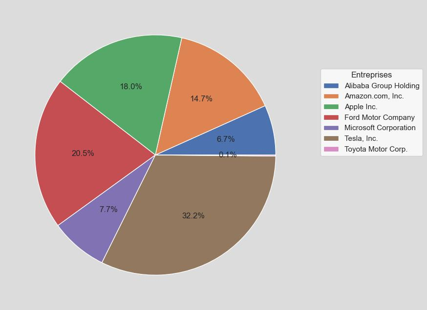

| Entreprise | PrixMoyenOuverture | PrixMoyenFermeture | VolatilitéMoyenne | VolumeMoyen | TendanceGlobale | RendementMoyenJournalier |
|---|---|---|---|---|---|---|
| Alibaba Group Holding | 90.82 | 90.81 | 2.01 | 18036040.53 | -0.01 | -0.01% |
| Amazon.com, Inc. | 191.49 | 191.58 | 4.26 | 39496648.02 | 0.09 | 0.06% |
| Apple Inc. | 227.88 | 228.40 | 3.99 | 48294526.33 | 0.52 | 0.24% |
| Ford Motor Company | 10.72 | 10.71 | 0.26 | 54866534.60 | -0.01 | -0.09% |
| Microsoft Corporation | 422.16 | 421.99 | 7.28 | 20609464.17 | -0.17 | -0.04% |
| Tesla, Inc. | 268.48 | 268.91 | 12.37 | 86198458.94 | 0.42 | 0.14% |
| Toyota Motor Corp. | 176.85 | 176.73 | 2.29 | 377897.81 | -0.12 | -0.06% |
SatechiのMac mini/MacBook Pro用USBハブや急速充電器などが最大25%OFFとなるホリデーセルが開催中。 - applech2 (2024-12-18T12:21:08Z)
SatechiのMac mini/MacBook Pro用USBハブや急速充電器などが最大25%OFFとなるホリデーセルが開催されています。詳細は以下から。 米カリフォルニア州のサードパーティメーカーSatechiは […] The post SatechiのMac mini/MacBook Pro用USBハブや急速充電器などが最大25%OFFとなるホリデーセルが開催中。 first appeared on AAPL Ch..
2,465 Shares in Apple Inc. (NASDAQ:AAPL) Acquired by Tull Financial Group Inc. - MarketBeat News (2024-12-18T08:10:50Z)
Tull Financial Group Inc. purchased a new stake in Apple Inc. (NASDAQ:AAPL – Free Report) in the 3rd quarter, Holdings Channel.com reports. The fund purchased 2,465 shares of the iPhone maker’s stock, valued at approximately $574,000. Apple comprises about 0.…
Apple Inc. (NASDAQ:AAPL) is Calton & Associates Inc.’s 3rd Largest Position - MarketBeat News (2024-12-18T08:10:56Z)
Calton & Associates Inc. raised its stake in shares of Apple Inc. (NASDAQ:AAPL – Free Report) by 29.2% during the 3rd quarter, Holdings Channel.com reports. The fund owned 52,118 shares of the iPhone maker’s stock after acquiring an additional 11,794 shares d…
Apple Inc. (NASDAQ:AAPL) Shares Bought by Builder Investment Group Inc. ADV - MarketBeat News (2024-12-18T08:10:53Z)
Builder Investment Group Inc. ADV grew its stake in shares of Apple Inc. (NASDAQ:AAPL – Free Report) by 0.7% in the 3rd quarter, Holdings Channel.com reports. The fund owned 11,484 shares of the iPhone maker’s stock after purchasing an additional 79 shares du…
Apple Inc. (NASDAQ:AAPL) Shares Sold by Ledyard National Bank - MarketBeat News (2024-12-18T08:10:51Z)
Ledyard National Bank lessened its position in shares of Apple Inc. (NASDAQ:AAPL – Free Report) by 1.8% in the 3rd quarter, HoldingsChannel reports. The fund owned 268,406 shares of the iPhone maker’s stock after selling 4,819 shares during the period. Apple …
Defender Capital LLC. Trims Stake in Apple Inc. (NASDAQ:AAPL) - MarketBeat News (2024-12-18T08:10:57Z)
Defender Capital LLC. lessened its position in Apple Inc. (NASDAQ:AAPL – Free Report) by 7.7% in the third quarter, according to the company in its most recent filing with the Securities & Exchange Commission. The firm owned 7,195 shares of the iPhone maker’s…
Fortis Group Advisors LLC Has $16.24 Million Position in Apple Inc. (NASDAQ:AAPL) - MarketBeat News (2024-12-18T08:10:51Z)
Fortis Group Advisors LLC boosted its holdings in shares of Apple Inc. (NASDAQ:AAPL – Free Report) by 2.0% during the 3rd quarter, Holdings Channel reports. The firm owned 69,696 shares of the iPhone maker’s stock after buying an additional 1,339 shares durin…
Kaye Capital Management Reduces Position in Apple Inc. (NASDAQ:AAPL) - MarketBeat News (2024-12-18T08:10:53Z)
Kaye Capital Management decreased its holdings in shares of Apple Inc. (NASDAQ:AAPL – Free Report) by 0.3% in the third quarter, according to its most recent Form 13F filing with the Securities & Exchange Commission. The institutional investor owned 18,913 sh…
RFP Financial Group LLC Sells 6,504 Shares of Apple Inc. (NASDAQ:AAPL) - MarketBeat News (2024-12-18T08:10:50Z)
RFP Financial Group LLC cut its position in shares of Apple Inc. (NASDAQ:AAPL – Free Report) by 7.8% in the 3rd quarter, HoldingsChannel.com reports. The fund owned 76,897 shares of the iPhone maker’s stock after selling 6,504 shares during the period. Apple …
Sky Investment Group LLC Trims Holdings in Apple Inc. (NASDAQ:AAPL) - MarketBeat News (2024-12-18T08:50:59Z)
Sky Investment Group LLC reduced its holdings in shares of Apple Inc. (NASDAQ:AAPL – Free Report) by 2.7% during the 3rd quarter, according to its most recent 13F filing with the SEC. The fund owned 37,922 shares of the iPhone maker’s stock after selling 1,05…
Nvidia's Blackwell chip could push the company into a new stratosphere as the AI revolution continues - Julie Hyman (2024-12-18T11:00:15Z)
Nvidia's Blackwell chip has taken the world by storm. For that reason, Yahoo Finance has selected Blackwell as its 2024 Product of the Year.
盤中速報 - 道瓊指數大跌2%，報42581.78點 - 鉅亨網新聞中心 (2024-12-18T12:49:29Z)
道瓊指數盤中下跌，近日週月績效、成分股表現、即時新聞資訊。
Corundum Trust Company INC Has $2.47 Million Stock Holdings in Microsoft Co. (NASDAQ:MSFT) - MarketBeat News (2024-12-18T08:11:00Z)
Corundum Trust Company INC lowered its position in Microsoft Co. (NASDAQ:MSFT – Free Report) by 7.8% during the 3rd quarter, Holdings Channel reports. The fund owned 5,731 shares of the software giant’s stock after selling 488 shares during the period. Micros…
GAM Holding AG Decreases Stock Position in Microsoft Co. (NASDAQ:MSFT) - MarketBeat News (2024-12-18T08:11:00Z)
GAM Holding AG reduced its position in shares of Microsoft Co. (NASDAQ:MSFT – Free Report) by 13.3% in the third quarter, Holdings Channel reports. The firm owned 161,330 shares of the software giant’s stock after selling 24,671 shares during the period. Micr…
Mainsail Financial Group LLC Sells 424 Shares of Microsoft Co. (NASDAQ:MSFT) - MarketBeat News (2024-12-18T08:11:00Z)
Mainsail Financial Group LLC decreased its holdings in Microsoft Co. (NASDAQ:MSFT – Free Report) by 4.2% in the third quarter, according to its most recent 13F filing with the SEC. The institutional investor owned 9,718 shares of the software giant’s stock af…
Marietta Wealth Management LLC Grows Stake in Microsoft Co. (NASDAQ:MSFT) - MarketBeat News (2024-12-18T08:11:00Z)
Marietta Wealth Management LLC grew its position in shares of Microsoft Co. (NASDAQ:MSFT – Free Report) by 2.7% during the 3rd quarter, Holdings Channel.com reports. The institutional investor owned 44,043 shares of the software giant’s stock after acquiring …
Microsoft Co. (NASDAQ:MSFT) is Altus Wealth Group LLC’s 9th Largest Position - MarketBeat News (2024-12-18T09:24:57Z)
Altus Wealth Group LLC lifted its stake in shares of Microsoft Co. (NASDAQ:MSFT – Free Report) by 31.2% during the 3rd quarter, Holdings Channel reports. The institutional investor owned 15,458 shares of the software giant’s stock after buying an additional 3…
Plan Group Financial LLC Purchases 405 Shares of Microsoft Co. (NASDAQ:MSFT) - MarketBeat News (2024-12-18T09:25:01Z)
Plan Group Financial LLC grew its position in shares of Microsoft Co. (NASDAQ:MSFT – Free Report) by 52.7% in the third quarter, according to its most recent filing with the SEC. The fund owned 1,174 shares of the software giant’s stock after acquiring an add…
Ruedi Wealth Management Inc. Sells 98 Shares of Microsoft Co. (NASDAQ:MSFT) - MarketBeat News (2024-12-18T08:50:59Z)
Ruedi Wealth Management Inc. lessened its holdings in shares of Microsoft Co. (NASDAQ:MSFT – Free Report) by 4.9% during the 3rd quarter, Holdings Channel.com reports. The fund owned 1,893 shares of the software giant’s stock after selling 98 shares during th…
TFG Advisers LLC Has $13.29 Million Holdings in Microsoft Co. (NASDAQ:MSFT) - MarketBeat News (2024-12-18T08:50:59Z)
TFG Advisers LLC lessened its stake in shares of Microsoft Co. (NASDAQ:MSFT – Free Report) by 0.1% during the third quarter, according to its most recent filing with the Securities and Exchange Commission (SEC). The institutional investor owned 30,886 shares …
ホンダと日産、経営統合へ：持ち株会社設立も「弱者連合」の懸念 - アゴラ編集部 (2024-12-17T23:30:21Z)
日経新聞によると、ホンダと日産は経営統合に向けた協議を開始し、持ち株会社の設立を検討しているとのことです。三菱自動車の合流も視野に入れ、3社統合で世界3位規模の自動車メーカーを目指します。背景にはテスラや中国勢の急成長があり、EV時代の競争…
Is Lucid Motors a Millionaire Maker? - aol.com (2024-12-18T11:23:37Z)
Lucid Motors (NASDAQ: LCID) is basically trying to ride the coattails of Tesla (NASDAQ: TSLA). Investors who buy Lucid stock are largely betting that it can, at least to some degree, achieve similar success. While Lucid is making progress toward the goal of b…
Trump Team Pushes to Scrap Crash Reporting Rule Opposed by Tesla (TSLA) - Ghazal Ahmed (2024-12-18T07:17:50Z)
We recently published a list of Top 10 AI News You Shouldn’t Miss. In this article, we are going to take a look at where Tesla, Inc. (NASDAQ:TSLA) stands...
Purpose Investments Inc. Announces December 2024 Distributions - GlobeNewswire (2024-12-18T01:49:47Z)
TORONTO, Dec. 17, 2024 (GLOBE NEWSWIRE) — Purpose Investments Inc. (“Purpose”) is pleased to announce distributions for the month of December 2024 for its open-end exchange-traded funds and closed-end funds (“the Funds”). The ex-distribution date for all Open…
AT&T is joining Amazon in ordering employees back to the office 5 days a week - Rocio Fabbro (2024-12-18T13:28:00Z)
AT&T (T) is jumping on the return-to-office bandwagon. The telecom giant is requiring all of its office workers to head back to the office five days a week starting in January, Quartz confirmed. AT&T had formerly implemented a hybrid schedule, requiring just …
Nissan and Mitsubishi stock pop because a Honda mega-merger might be coming - William Gavin (2024-12-18T13:22:00Z)
Nissan Motor (NSANY) stock is booming as the automaker reportedly prepares to explore a merger with Honda Motor (HMC), which would tie up Japan’s second and third-largest automakers. Read more...
[Removed] - (2024-12-18T13:29:19Z)
[Removed]
盤中速報 - 特斯拉(TSLA-US)大跌5.11%，報455.32美元 - 鉅亨網新聞中心 (2024-12-18T12:18:32Z)
特斯拉(TSLA-US)盤中下跌，漲跌幅、近日週月績效、相關指數表現、即時新聞資訊。
Purpose Investments Inc. Announces December 2024 Distributions - Purpose Investments Inc. (2024-12-18T01:47:00Z)
TORONTO, Dec. 17, 2024 (GLOBE NEWSWIRE) -- Purpose Investments Inc. (“Purpose”) is pleased to announce distributions for the month of December 2024 for its open-end exchange-traded funds and closed-end funds (“the Funds”).
Purpose Investments Inc. annonce les distributions de décembre 2024 - Purpose Investments Inc. (2024-12-18T01:47:00Z)
TORONTO, 17 déc. 2024 (GLOBE NEWSWIRE) -- Purpose Investments Inc. (« Purpose ») a le plaisir d’annoncer des distributions pour le mois de décembre 2024 pour ses fonds négociés en bourse à capital variable et ses fonds à capital fixe (les « Fonds »)